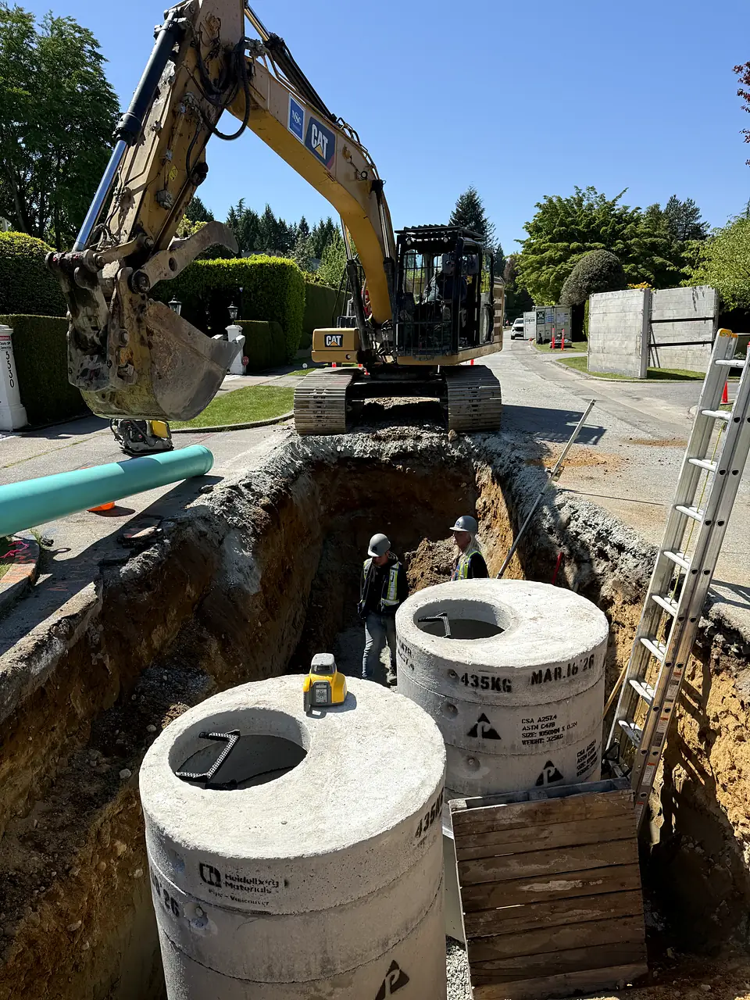
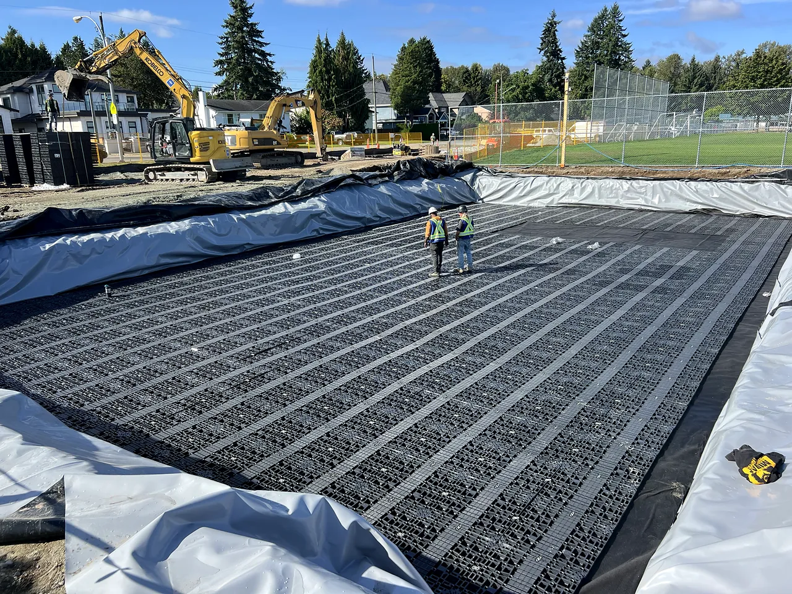
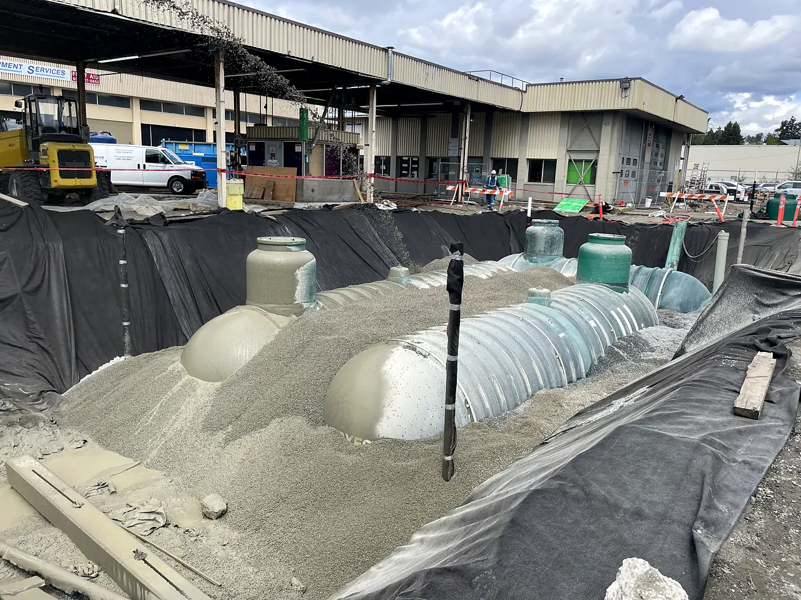
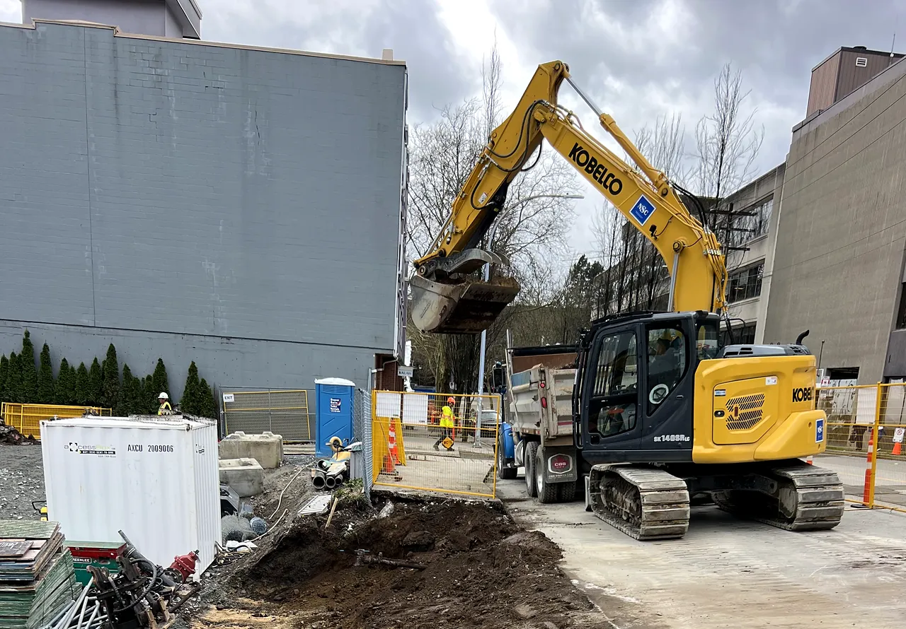

01 · Market
Municipal and public works
Sewer separation, utility renewal and road restoration on live streets, for cities and public agencies. We plan traffic, access and service connections so residents and businesses keep running while the work goes on.
What we deliver
- Sanitary and storm sewer separation and renewal
- Watermains, services, hydrants and tie-ins
- Manholes, catch basins and flow control
- Road restoration, curb, gutter and sidewalks
- Traffic management and Good Neighbour programs
Owners and partners
- City of Vancouver
- City of Surrey
- University Endowment Lands
Projects

02 · Market
Education
Civil, underground utility and site services for school districts across Metro Vancouver: additions, modular classrooms, seismic upgrades and the frontage works that go with them, delivered around occupied schools and school calendars.
What we deliver
- Site servicing for additions and modular classrooms
- Detention tanks and flow control manholes
- Fire and domestic water, BC Hydro and electrical
- Bulk and detailed excavation, grading and shoring
- Curb, sidewalks, parking areas and paving
Owners and partners
- School District #36 Surrey
- School District #37 Delta
- School District #38 Richmond
- School District #40 New Westminster
- School District #41 Burnaby
- University of British Columbia
Projects

03 · Market
Public facilities and institutions
Excavation, utilities and site works at operating public facilities: fire halls, city works yards, campus buildings and public amenities, coordinated with prime contractors and the people who use the site every day.
What we deliver
- Civil scope for seismic upgrades
- Fuel systems, tanks and oil-water separators
- Trench drains, slabs and aprons
- Shoring and deep utility excavation beside structures
- Service connections for new public buildings
Owners and partners
- City of Vancouver
- University of British Columbia
- Scott Special Projects
- Kinetic Construction
Projects

04 · Market
Private development and housing
Earthworks and site services for residential, supportive housing and commercial development, working for owners and prime contractors from bulk excavation to final servicing.
What we deliver
- Bulk excavation and shoring
- Site servicing: storm, sanitary and water
- Manholes, hydrants and service connections
- Curb, walkways and site restoration
Owners and partners
- Keller Construction
- Allaire Circadian LLP
- SmartCentres
- Wright Construction
Projects
Contact
Planning a project?
Send drawings, a tender package or a prequalification request. Our estimating team will respond within one business day.